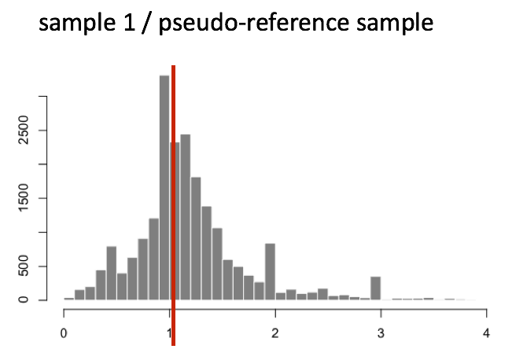
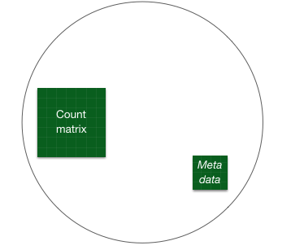

Chapter 2 Count normalization
2.1 Normalization
The first step in the DE analysis workflow is count normalization, which is necessary to make accurate comparisons of gene expression between samples.

The counts of mapped reads for each gene is proportional to the expression of RNA (“interesting”) in addition to many other factors (“uninteresting”). Normalization is the process of scaling raw count values to account for the “uninteresting” factors. In this way the expression levels are more comparable between and/or within samples.
The main factors often considered during normalization are:
- Sequencing depth:
Accounting for sequencing depth is necessary for comparison of gene expression between samples. In the example below, each gene appears to have doubled in expression in Sample A relative to Sample B, however this is a consequence of Sample A having double the sequencing depth.

NOTE: In the figure above, each pink and green rectangle represents a read aligned to a gene. Reads connected by dashed lines connect a read spanning an intron.*
- Gene length:
Accounting for gene length is necessary for comparing expression between different genes within the same sample. In the example, Gene X and Gene Y have similar levels of expression, but the number of reads mapped to Gene X would be many more than the number mapped to Gene Y because Gene X is longer.

- RNA composition:
RNA composition bias arises when a few highly expressed genes dominate the overall expression profile of a sample. Accounting for RNA composition is recommended for accurate comparison of expression between samples, and is particularly important when performing differential expression analyses [1]
In the example, if we were to divide each sample by the total number of counts to normalize, the counts would be greatly skewed by the DE gene, which takes up most of the counts for Sample A, but not Sample B. Most other genes for Sample A would be divided by the larger number of total counts and appear to be less expressed than those same genes in Sample B.

While normalization is essential for differential expression analyses, it is also necessary for exploratory data analysis, visualization of data, and whenever you are exploring or comparing counts between or within samples.
2.1.1 Common normalization methods
Several common normalization methods exist to account for these differences:
| Normalization method | Description | Accounted factors | Recommendations for use |
|---|---|---|---|
| TPM (transcripts per kilobase million) | counts per length of transcript (kb) per million reads mapped | sequencing depth and gene length | gene count comparisons within a sample or between samples of the same sample group; NOT for DE analysis |
| RPKM/FPKM (reads/fragments per kilobase of exon per million reads/fragments mapped) | similar to TPM | sequencing depth and gene length | gene count comparisons between genes within a sample; NOT for between sample comparisons or DE analysis |
| DESeq2’s median of ratios [1] | counts divided by sample-specific size factors determined by median ratio of gene counts relative to geometric mean per gene | sequencing depth and RNA composition | gene count comparisons between samples and for DE analysis; NOT for within sample comparisons |
| EdgeR’s trimmed mean of M values (TMM) [2] | uses a weighted trimmed mean of the log expression ratios between samples | sequencing depth, RNA composition | gene count comparisons between samples and for DE analysis; NOT for within sample comparisons |
Conclusion: Tools like DESeq2 or edgeR are better suited for differential expression analysis, as they:
Use raw counts for more accurate modeling.
Apply statistical modeling (e.g., Negative Binomial) to account for variance across replicates.
2.1.2 DESeq2 Normalization: Median of Ratios Method
For differential expression analysis, gene length need not be factored in; however, sequencing depth and RNA composition must be considered. The median of ratios method neutralizes these differences.
This method involves several steps, even though from the user-end it appears as a single function call in DESeq2.
DESeq2 Normalization: Median of Ratios Method DESeq2 normalizes for sequencing depth and RNA composition using the median of ratios method.
Step 1: Create Pseudo-reference Sample (Row-wise Geometric Mean) Calculate the geometric mean for each gene across all samples to create a reference.
Step 2: Calculate the Ratio of Each Sample to the Reference For each sample, divide each gene count by its geometric mean reference value.
Step 3: Calculate the Normalization Factor for Each Sample (Size Factor) Take the median of all ratios for each sample - this becomes the normalization factor.
Step 4: Calculate the Normalized Count Values Using the Normalization Factor Divide raw counts by the sample’s size factor to get normalized counts.
Why this works:
Robust: Uses median (less sensitive to outliers)
Assumes most genes aren’t differentially expressed
Accounts for library size and composition differences
Geometric mean reduces impact of extreme values
The method efficiently corrects technical variation while preserving biological differences, enabling accurate differential expression analysis.
Let’s go through an example:
Step 1: Create a Pseudo-reference Sample (Row-wise Geometric Mean)
The geometric mean of a set of \(n\) positive numbers \(x_1, x_2, \dots, x_n\) is defined as the nth root of the product of the n numbers:
\[ \text{Geometric Mean} = \left( \prod_{i=1}^{n} x_i \right)^{\frac{1}{n}} \]
For each gene, a pseudo-reference sample is created that is equal to the geometric mean across all samples, reducing the impact of extreme values.
| Gene | Sample A | Sample B | Pseudo-reference Sample |
|---|---|---|---|
| EF2A | 1489 | 906 | sqrt(1489 * 906) = 1161.5 |
| ABCD1 | 22 | 13 | sqrt(22 * 13) = 17.7 |
| … | … | … | … |
Step 2: Calculate the Ratio of Each Sample to the Reference
For every gene in a sample, calculate the ratio of the sample count to the reference (sample/ref). This is performed for each sample in the dataset, resulting in ratios for most genes that are similar, as depicted below:
| Gene | Sample A | Sample B | Pseudo-reference Sample | Ratio of Sample A/Ref | Ratio of Sample B/Ref |
|---|---|---|---|---|---|
| EF2A | 1489 | 906 | 1161.5 | 1489/1161.5 = 1.28 | 906/1161.5 = 0.78 |
| ABCD1 | 22 | 13 | 17.7 | 22/17.7 = 1.24 | 13/17.7 = 0.73 |
| MEFV | 793 | 410 | 570.2 | 793/570.2 = 1.39 | 410/570.2 = 0.72 |
| … | … | … | … | … | … |
Step 3: Calculate the Normalization Factor for Each Sample (Size Factor)
The median value of all ratios for a given sample is calculated as the normalization factor (size factor):
normalization_factor_sampleA <- median(c(1.28, 1.24, 1.39, 1.35, 0.59))
normalization_factor_sampleB <- median(c(0.78, 0.73, 0.72, 0.74, 1.35))The figure below illustrates the median value for the distribution of all gene ratios for a single sample (frequency is on the y-axis).

The median of ratios method accounts for both sequencing depth and composition bias.
Sequencing Depth:
Problem: Sample A might have 20 million reads while Sample B has 40 million reads
Solution: When you calculate ratios (Sample/Pseudo-reference), genes in the deeper-sequenced sample will have consistently higher ratios across most genes
Result: The median ratio for Sample A might be 0.5, for Sample B might be 2.0
Normalization: Dividing each sample’s counts by its median ratio equalizes sequencing depth
RNA Composition Bias:
Problem: Sample A might have a few highly expressed genes (like ribosomal genes) that “steal” sequencing reads from other genes
Example: If 50% of reads in Sample A come from just 10 highly expressed genes, all other genes appear artificially low
Solution: These outlier genes create extreme ratios, but the median is robust to outliers
Result: The median ratio reflects the typical gene’s behavior, not the extreme outliers
This method is robust as it assumes that not all genes are differentially expressed, allowing normalization factors to account for both sequencing depth and RNA composition efficiently.
The key insight: By using the median rather than the mean, the method ignores extreme outliers that cause composition bias while still correcting for overall sequencing depth differences. The median represents what a “typical” gene experienced, not what the most extreme genes did.
Step 4: Calculate the Normalized Count Values Using the Normalization Factor
Each raw count value in a given sample is divided by that sample’s normalization factor to generate normalized count values across all genes:
| Gene | Sample A | Sample B |
|---|---|---|
| EF2A | 1489 / 1.3 = 1145.39 | 906 / 0.77 = 1176.62 |
| ABCD1 | 22 / 1.3 = 16.92 | 13 / 0.77 = 16.88 |
| … | … | … |
Note that normalized count values may not always be whole numbers.
Exercise points = +1
Determine the normalized counts for your gene of interest, PD1, given the raw counts and size factors below.
NOTE: You will need to run the code below to generate the raw counts dataframe (PD1) and the size factor vector (size_factors), then use these objects to determine the normalized counts values:
2.2 Count normalization of Mov10
Now that we know the theory of count normalization, we will normalize the counts for the Mov10 dataset using DESeq2. This requires a few steps:
- Ensure the row names of the metadata dataframe are present and in the same order as the column names of the counts dataframe.
- Create a
DESeqDataSetobject - Generate the normalized counts
2.2.1 1. Match the metadata and counts data
We should always make sure that we have sample names that match between the two files, and that the samples are in the right order. DESeq2 will output an error if this is not the case.
## [1] TRUE## [1] FALSEThe colnames of our data don’t match the rownames of our metadata so we need to reorder them. We can use the match function:
idx <- match(rownames(meta),colnames(data))
data <- data[,idx]
all(colnames(data) == rownames(meta))## [1] TRUEExercise points = +2
Suppose we had the same sample names in the colnames of the counts matrix and the rownames of the metadata file, but they were in a different order. Write the line(s) of code required to create a new matrix with columns ordered such that they were identical to the row names of the metadata.
2.2.2 2. Create DESeq2 object
Bioconductor software packages often define and use a custom class within R for storing data (input data, intermediate data and also result data). These custom data structures are similar to lists in that they can contain multiple different data types/structures within them. But, unlike lists they have pre-specified data slots, which hold specific types/classes of data. The data stored in these pre-specified slots can be accessed by using specific package-defined functions.
Let’s start by creating the DESeqDataSet object and then we can talk a bit more about what is stored inside it. To create the object we will need the count matrix and the metadata table as input. We will also need to specify a design formula. The design formula specifies the column(s) in the metadata table and how they should be used in the analysis. For our dataset we only have one column we are interested in, that is ~sampletype. This column has three factor levels, which tells DESeq2 that for each gene we want to evaluate gene expression change with respect to these different levels.
## Create DESeq2Dataset object
dds <- DESeqDataSetFromMatrix(countData = data, colData = meta, design = ~ sampletype)
You can use DESeq-specific functions to access the different slots and retrieve information, if you wish. For example, suppose we wanted the original count matrix we would use counts():
## Irrel_kd_1 Irrel_kd_2 Irrel_kd_3 Mov10_kd_2 Mov10_kd_3
## 1/2-SBSRNA4 45 31 39 57 41
## A1BG 77 58 40 71 40
## A1BG-AS1 213 172 126 256 177
## A1CF 0 0 0 0 1
## A2LD1 91 80 50 146 81
## A2M 9 8 4 10 9As we go through the workflow we will use the relevant functions to check what information gets stored inside our object. We can also run:
## [1] "design" "dispersionFunction" "rowRanges"
## [4] "colData" "assays" "NAMES"
## [7] "elementMetadata" "metadata"2.2.3 3. Generate the Mov10 normalized counts
The next step is to normalize the count data in order to be able to make fair gene comparisons between samples.
To perform the median of ratios method of normalization, DESeq2 has a single estimateSizeFactors() function that will generate size factors for us. We will use the function in the example below, but in a typical RNA-seq analysis this step is automatically performed by the DESeq() function, which we will see later.
By assigning the results back to the dds object we are filling in the slots of the DESeqDataSet object with the appropriate information. We can take a look at the normalization factor applied to each sample using:
## Irrel_kd_1 Irrel_kd_2 Irrel_kd_3 Mov10_kd_2 Mov10_kd_3 Mov10_oe_1 Mov10_oe_2
## 1.1224020 0.9625632 0.7477715 1.5646728 0.9351760 1.2016082 1.1205912
## Mov10_oe_3
## 0.6534987Now, to retrieve the normalized counts matrix from dds, we use the counts() function and add the argument normalized=TRUE.
We can save this normalized data matrix to file for later use: